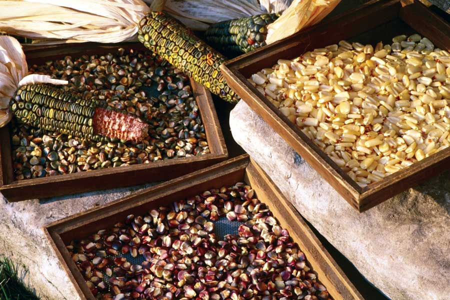

Corn was domesticated in Mexico and grown by Native Americans long before European settlers arrived. ‘Oaxacan Green’ dent corn has been cultivated for centuries by the Zapotec peoples of southern Mexico and used to make green flour tamales. Seed Savers Exchange members offer more than 250 corn varieties in their yearbook. Corn has always been grown in the traditional Three Sisters garden, along with beans and squash. Bean plants will climb the strong stalks of corn, while squash vines grow under the corn, controlling weeds and keeping the soil cool and moist. The Three Sisters become a community and support each other, requiring no attention until harvest time.
CORN BREAD
Ingredients:
1/2 pound bacon, diced
1 cup yellow cornmeal
1 cup all-purpose flour
1/4 cup sugar
1 tbsp baking powder
1 tsp salt
1/3 cup oil
1 egg
1 cup milk
1 cup fresh corn
2 tbsp sugar
Instructions:
Preheat oven to 400 degrees Fahrenheit. Cook bacon until crispy. Drain and reserve fat. In a mixing bowl, combine all dry ingredients. In a second bowl, combine all wet ingredients. Mix wet ingredients into dry ingredients, along with bacon and corn. Stir until just together (batter will be lumpy). Use extra bacon fat to grease either a cast-iron skillet or an 8-inch baking dish. Pour in batter and cook for 15 minutes. Sprinkle an additional 2 tbsp of sugar on top and continue cooking for 10 minutes or until a toothpick inserted in the middle comes out clean. Serves 4.
|
 ROSALIND CREASY Seed Savers Exchange members offer more than 250 corn varieties in their yearbook. |
|
|